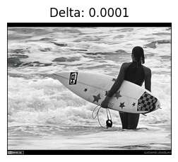
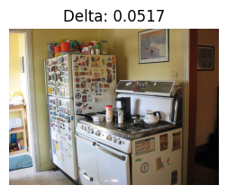
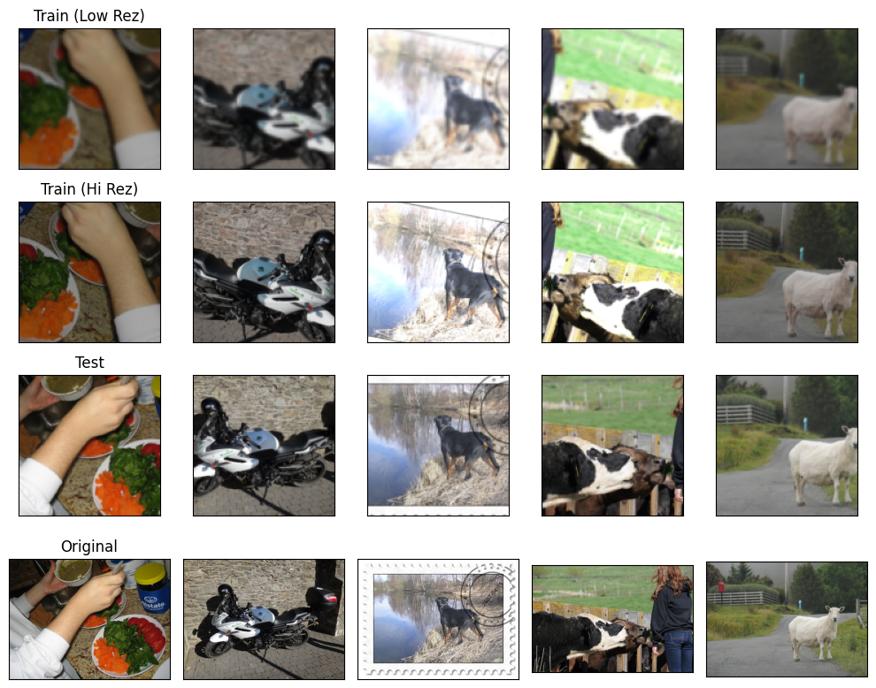
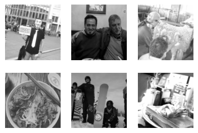

wget http://images.cocodataset.org/zips/train2017.zip -O data/train2017.zip
unzip data/train2017.zip
rm data/train2017.zipCOCO: Coloration
I want to train a bigger U-net with a bigger dataset and a better data pre-processing pipeline. This notebook is solely for the data-processing pipeline
First, let’s download the data.
Now, we want to remove all black and white images, because we want to predict the color data. We’ll use a simple heuristic to determine if the image is black and white.
to_img
to_img (im)
Convert PIL image to numpy
black_and_white
black_and_white (im, viz=False, thresh=0.01)
Infer whether image is black and white by seeing how much the original image and a converted black-and-white version differ from one another
fp = "data/train2017"
fps = [str(fi) for fi in Path(fp).glob("**/*.jpg")]We can see this working as follows:
black_and_white(Image.open(fps[0]), viz=True)True
black_and_white(Image.open(fps[1]), viz=True)False
fps_color = []
with multiprocessing.Pool() as p:
iter_ = zip(p.imap(black_and_white, fps), fps)
for b_w, fp in tqdm(iter_, total=len(fps)):
if not b_w:
fps_color.append(fp)100%|██████████████████████████████████████████████████████████████████████████████████| 118287/118287 [04:46<00:00, 412.95it/s]fps_color = set(fps_color)
for fp in Path(fp).glob("**/*.jpg"):
if fp not in fps_color:
fp.unlink()coco_2017_trn
coco_2017_trn (fps=None, n=None, remove_bw=True)
Combine the image preprocessing logic and return a huggingface dataset
ds = coco_2017_trn(fps_color)CPU times: user 5.98 s, sys: 1.09 s, total: 7.07 s
Wall time: 9.98 sdsDatasetDict({
train: Dataset({
features: ['image_fp', 'image'],
num_rows: 101938
})
test: Dataset({
features: ['image_fp', 'image'],
num_rows: 11327
})
})crop_to_box
crop_to_box (img:<module'PIL.Image'from'/opt/hostedtoolcache/Python/3.10. 14/x64/lib/python3.10/site-packages/PIL/Image.py'>)
preprocess_super_rez
preprocess_super_rez (examples, pipe, extra_blur=False)
rows = ds["train"][:6]
fig, axes = plt.subplots(4, 5, figsize=(10, 8))
for ax in axes.flatten():
ax.set_xticks([])
ax.set_yticks([])
trn = preprocess_super_rez(rows, pipe=trn_preprocess_super_rez)
tst = preprocess_super_rez(rows, pipe=tst_preprocess_super_rez)
for im_trn_hi, im_trn_lo, im_test, im_org, ax_col in zip(
trn["image_high_rez"],
trn["image_low_rez"],
tst["image_high_rez"],
rows["image"],
axes.T,
):
for ax, im in zip(ax_col, (im_trn_lo, im_trn_hi, im_test)):
ax.imshow(denorm(im).permute(1, 2, 0))
ax_col[3].imshow(im_org)
axes[0, 0].set(title="Train (Low Rez)")
axes[1, 0].set(title="Train (Hi Rez)")
axes[2, 0].set(title="Test")
axes[3, 0].set(title="Original")
fig.tight_layout()
get_coco_dataset
get_coco_dataset (fac, trn, tst, fp='data/train2017', bs=512, n=None, columns=['image_low_rez', 'image_high_rez'])
dls = get_coco_dataset_super_rez(n=100)CPU times: user 842 ms, sys: 188 ms, total: 1.03 s
Wall time: 858 msWe also want to do colorization
preprocess_colorization
preprocess_colorization (examples, pipe)
dls = get_coco_dataset_colorization(n=100)CPU times: user 959 ms, sys: 162 ms, total: 1.12 s
Wall time: 897 msxb, yb = dls.peek()denorm(xb).max()tensor(0.9961)show_images(denorm(xb[:6, ...]), imsize=(1.6))
show_images(denorm(yb[:6, ...]), imsize=(1.6))